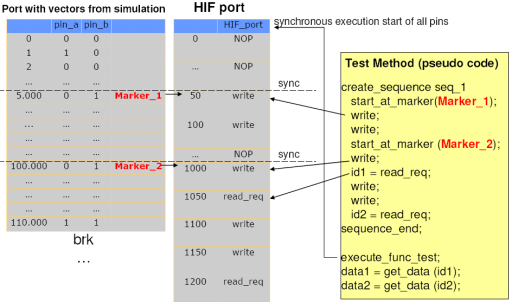
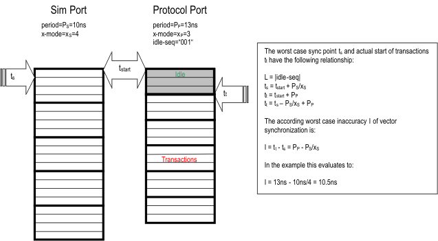
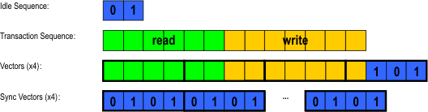

Vector based synchronization
With synchronized protocol tests, the test method API provides means to attach a sequence of transactions to a synchronization point. Synchronization points (markers) can be set up in a user vector of a concurrently running port.
A synchronized test may contain multiple synchronized transaction sequences, each referencing its own synchronization point and port. When the test is translated to a pattern, first all ports to be synchronized are collected and the protocol port on which to execute the synchronized test is added to the synchronization group of these ports.
If the referenced ports are part of different synchronization groups, an error is generated.
Synchronized tests can be synchronized to simulated vector patterns of other ports. For this the multiport burst pattern must provide a matching synchronization group setup to be predefined.

Conditions and restrictions of using synchronization points
- Definition of synchronization points is limited to ports running simulation-based pattern.
- Synchronization points are represented by a unique string.
- Synchronization points must not be placed behind or within match loops.
- Synchronization point must not be placed within a loop.
- The same synchronization point can be used as a reference from different synchronized protocol tests. This way two synchronized protocol tests can be executed synchronous to each other.
- Ports of synchronized protocol tests started by multiple simulation-based pattern must be part of the same synchronization group.
- Protocol tests without any synchronization point automatically will be synchronized to the first vector and run in the default timing synchronization group.
- Multiple synchronization points cannot be attached to logical vectors if mapped to the same physical vector.
The start label and all its descendants may contain ambiguous markers, i.e. within the executed call hierarchy the marker occurs more than once. In this case synchronization always will be done to the first occurrence of the marker on the referenced port.
The length of each transaction sequence is checked against the distance of synchronization points. If a transaction sequence needs more time to execute than the distance from its own marker to the one of the succeeding transaction sequence, an error will be generated.
The actual synchronization and wait time is based on vector granularity. The accuracy of synchronization is determined by the hardware capabilities for generating vectors, the user periods and x-modes of both ports and the idle sequence length. The idle or wait time between transaction sequences is filled with a user defined idle sequence which is repeated until the synchronization point or wait time has been reached.
The synchronization will align to the next possible location after the marker or delay time. The marker is therefore assumed to be attached to the start of a user vector.

In case of using x-modes with the protocol port, a transaction sequence itself may not exactly end on a tester vector boundary (x). In this case, the remaining (n , for n < x) state character sequence is filled with the user-defined idle sequence beginning at the last state character of the transaction.
If that idle sequence is shorter than n, it will be filled in starting from the far vector boundary and repeated backwards to fill the gap with whole idle sequences till it reaches the transaction's last state character. If the gap can not be filled with full idle sequences only, a fraction of the idle sequence will be fitted to match the exact length of the gap.
Synchronization information can be combined with delays for a single transaction sequence.
However the combination of synchronization and delays follow these rules:
- First the synchronization is applied by filling in idle vectors to the point of synchronization.
- The delay is inserted after the synchronization.
- The minimum length of a idle sequence is one state character.
- Idle sequences should match the x-mode used or be a integer fraction of it.
Thus the first transaction of the sequence will start the given delay after the synchronization point earliest.
Example
The following example shows an idle sequence of 01 which is attached backward to the end of the transaction.
It also shows that the wait sequence following the transaction is filled forward with the given idle sequence.

Functional changes
- Introduced in SmarTest 7.1.0